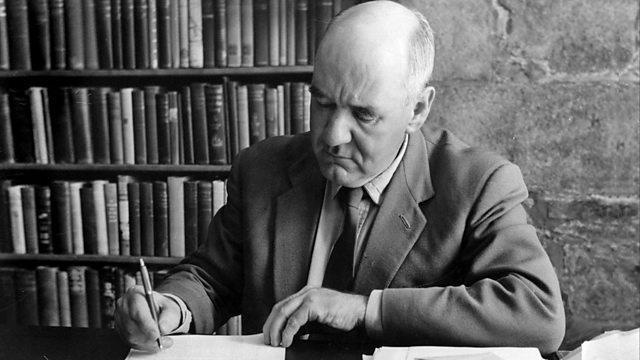

Закон Паркинсона
Закон Па́ркинсона — эмпирический закон, сформулированный историком Сирилом Норткотом Паркинсоном в его сатирической статье, напечатанной в британском журнале The Economist в 1955 году и позднее изданной вместе с его другими статьями в книге «Закон Паркинсона» (англ. Parkinson’s Law: The Pursuit of Progress; Лондон, John Murray, 1958). Данный закон гласит, что «Работа заполняет время, отпущенное на неё». Впоследствии С. Н. Паркинсоном были опубликованы книги, в которых формулировались соответственно второй («Расходы растут с доходами»), третий («Рост приводит к усложнённости, а усложнённость — это конец пути») законы Паркинсона, а также закон миссис Паркинсон.

Паркинсон основывал свои рассуждения на обширном опыте работы британских государственных учреждений.
Первый закон Паркинсона
Работа заполняет время, отпущенное на неё.
Так, согласно Паркинсону, если старушка может писать письмо племяннице весь день, то она и будет писать его весь день. Работа будет заполнять все сроки, на неё отведённые. Согласно Паркинсону, у этого закона есть две движущие силы:
- чиновник стремится множить подчинённых, а не соперников;
- чиновники создают друг другу работу;
Паркинсон также заметил, что общее количество занятых в бюрократии росло на 5—7 % в год безотносительно к каким-либо изменениям в объёме требуемой работы (если таковые были вообще).
Второй закон Паркинсона
Расходы растут с доходами
Следствие этого закона — рост налогов — лишь питает бюрократическую волокиту.
«Закон и прибыли» (англ. The Law and The Profits).
Третий закон Паркинсона
Рост приводит к усложнённости, а усложнённость — это конец пути.
«Свояки и чужаки» (англ. In-Laws and Out-Laws).
Закон миссис Паркинсон
Теплота, производимая домашними заботами, нарастает и переполняет данный индивидуум, от которого может быть передана только индивидууму более хладнокровному. «Закон миссис Паркинсон» (Mrs Parkinson’s law, and other studies in domestic science (1968).
Другие наблюдения
В книге «Закон Паркинсона» приведены также следующие наблюдения:
Жизненный цикл кабинетов
Жизненный цикл кабинета состоит из нескольких стадий:
- Идеальное число членов — пять человек. При таком численном составе кабинет непременно приживётся. Два его члена смогут всегда отсутствовать по болезни или по иной причине. Пятерых легко собрать, а собравшись, они способны действовать быстро, умело и тихо. Четверым из них можно поручить финансы, иностранные дела, оборону и правосудие. Пятый, не сведущий в этих предметах, станет председателем или премьером.
- Как ни удобно число пять, нередко в кабинет входит семь, а то и девять человек. Так бывает почти везде и объясняется это тем, что областей управления не четыре, а больше. На самом деле есть и другая причина. В кабинете из девяти человек трое вершат политику, двое поставляют сведения, один напоминает о финансах. Со свободным от дела председателем получается семь человек. Остальные двое, по-видимому, нужны для красоты. Мы практически ничего не знаем о назначении двух молчаливых членов, но у нас есть основания полагать, что на этой, второй, стадии кабинет без них работать не может.
- На третьей стадии в кабинеты входят новые члены, иногда они вроде бы знают ещё что-то нужное, но чаще просто очень вредят, если их в кабинет не ввести. Чтобы их утихомирить, приходится непрестанно с ними советоваться. По мере их включения число членов ползёт от десяти к двадцати. На этой третьей стадии дела идут много хуже.
- Прежде всего, очень трудно собрать столько народу;
- Лишь немногие из членов отбирались с расчётом на то, что они будут или могут приносить пользу. Большую часть скорее ввели, чтобы угодить какой-нибудь внешней группировке, и задача их — сообщать своим, как идут дела. С секретностью покончено;
- Чем крепче утверждаются ненужные члены, тем громче требуют обойдённые группы, чтобы ввели их представителей. Число членов переползает в третий десяток. И кабинет вступает в четвёртую, последнюю стадию.
- Четвёртая стадия. Когда в кабинете от 20 до 22 членов, он внезапно претерпевает особое химическое или органическое превращение, природу которого нетрудно понять и описать. Пять полезных членов встречаются отдельно и что-то решают. Кабинету практически делать нечего, тем самым в него можно ввести сколько угодно народу. Лишним членам не понадобится лишнее время, ибо все заседания теперь — пустая трата времени. Внешние группы довольны, их ставленников принимают всех беспрепятственно, и не скоро поймут они, что победа их призрачна. Двери открыты, число членов приближается к 40, растёт дальше. Может оно дорасти и до тысячи. Это уже не важно. Кабинет больше не кабинет, и прежние его функции выполняет другое, малое сообщество.
Паркинсон привёл полушутливую формулу для вычисления коэффициента бесполезности комитета (англ. Coefficient of Inefficiency) из нескольких параметров, из которой получил коэффициент бесполезности, лежащий <
«между 19,9 и 22,4 (десятые доли показывают частичное присутствие, то есть тех, кто посидел и ушел)».
В 2008 году был проведён статистический анализ связи между эффективностью управления и размером кабинета министров в 197 странах мира по данным на 2007 год и выявлена обратная зависимость: увеличение кабинета сопровождалось статистически достоверным снижением индекса развития человеческого потенциала, политической стабильности (согласно Всемирному банку) и качества управления. Эти же авторы рассчитали математическую модель закона Паркинсона (рост числа чиновников независимо от количества производимой работы) и пенсионный возрас. Кроме того, математическая модель подтвердила существование «феномена Карла I». Паркинсон обратил внимание на то, что ни в одной стране не наблюдалось кабинетов с числом членов, равным восьми. Единственное исключение в истории, по словам Паркинсона, — «Именно 8 членов было в Совете кабинета у Карла I. А чем это для него кончилось?!». Феномен Карла I отмечен в ГКЧП в 1991 году.
Высокая финансовая политика
Закон привычных сумм — время, потраченное на обсуждение пункта, обратно пропорционально рассматриваемой сумме. Обоснование закона — «в высокой финансовой политике разбирается два типа людей: те, у кого очень много денег, и те, у кого нет ничего. Миллионер прекрасно знает, что такое миллион. Для прикладного математика или профессора-экономиста миллион так же реален, как тысяча, ибо у них не было ни того, ни другого. Однако мир кишит людьми промежуточными, которые не разбираются в миллионах, но к тысячам привыкли. Из них и состоят в основном финансовые комиссии».
Финансовый комитет будет до хрипоты спорить о том, как потратить 100 фунтов, и легко согласится с выделением суммы в несколько миллионов.
Жизнь и смерть учреждений
Административное здание может достичь совершенства только к тому времени, когда учреждение приходит в упадок.
НЕПРИЗАВИТ (в другом варианте перевода — БЕСПОЗАВИЯ)
Состоит из трёх стадий.
- Среди сотрудников появляется человек, сочетающий полную непригодность к своему делу с завистью к чужим успехам. Наличие его определяется по внешним действиям, когда данное лицо, не справляясь со своей работой, вечно суётся в чужую и пытается войти в руководство.
- Носитель заразы в какой-то степени прорывается к власти. Нередко всё начинается прямо с этой стадии, так как носитель сразу занимает руководящий пост. Опознать его легко по упорству, с которым он выживает тех, кто способнее его, и не даёт продвинуться тем, кто может оказаться способнее в будущем. Результат — штаты постепенно заполняются людьми, которые глупее начальника. Признаки второй стадии — полное самодовольство. Задачи ставятся несложные, и потому сделать удаётся, в общем, всё. Начальство добивается того, что намечено и становится очень важным.
- Во всём учреждении, снизу доверху, не встретишь и капли разума. Признаки — самодовольство сменяется апатией.
Лечение:
- В первой стадии болезнь можно лечить уколами. «Очень сильно действует Нетерпимость, но её нелегко достать и опасность в ней большая. Добывают её из крови армейских старшин и содержит она два элемента: 1) „а можно и получше“ (МП) и 2) „никаких оправданий“ (НО)».
- Вторая стадия требует хирургического вмешательства. Пациент и хирург не должны совмещаться в одном лице, поэтому «нужен специалист, иногда — крупнейший из крупных, сам Паркинсон».
- Третья стадия пока неизлечима. Поэтому «сотрудников надо снабдить хорошими рекомендациями и направить в наиболее ненавистные вам учреждения, вещи и дела немедленно уничтожить, а здание застраховать и поджечь. Лишь когда всё выгорит дотла, можете считать, что зараза убита».
Пенсионный возраст
Любой работник начинает терять хватку за три года до достижения пенсионного возраста, чему бы этот возраст ни равнялся. При исчислении истинного пенсионного возраста надо исходить не из возраста того человека, о чьей отставке идёт речь (X), а из возраста его преемника (Y). На своём служебном пути X пройдёт следующие фазы:
- 1. Пору готовности (G)
- 2. Пору благоразумия (В) — G + 3
- 3. Пору выдвижения (V) — В + 7
- 4. Пору ответственности (О) — V + 5
- 5. Пору авторитета (А) — О + 3
- 6. Пору достижений (D) — А + 7
- 7. Пору наград (N) — D + 9
- 8. Пору важности (VV) — N + 6
- 9. Пору мудрости (М) — VV + 3
- 10. Пору тупика (Т) — М + 7
G — возраст, в котором данное лицо начинает свой профессиональный путь. При G=22 лицо X достигнет Т лишь к 72 годам. Исходя из его собственных возможностей, нет основания выгонять его до 71. Возрастная разница между X и Y (преемником) равна 15 годам. Если исходить из этой цифры, при G=22 лицо Y достигнет D (поры достижений) к 47 годам, когда лицу Х ещё только 62. Именно тут и происходит перелом. Y, зажимаемый Х, вместо фаз 6-9 проходит иные, новые фазы, как то:
- 6. Пору краха (К) — А + 7
- 7. Пору зависти (Z) — К + 9
- 8. Пору смирения (S) — Z + 4
- 9. Пору забвения (ZZ) — S + 5
Другими словами, когда Х исполняется 72, 57-летний Y входит в пору смирения. Если X уйдёт, то Y не сможет его заменить, так как смирился (отзавидовав своё) с жалкой участью.
Исследование приглашённых
Выведено правило, которое «ценно лишь до тех пор, пока никто о нём не знает. Поэтому считайте данную главу секретной и никому не показывайте. Люди, изучающие нашу науку, должны держать всё это при себе, а простой публике её читать незачем».
Закон отказа от авторства идеи
Ловкость в выбивании субсидий состоит главным образом в умении внушить ведающим финансами чиновникам, что именно ОНИ были инициаторами проведения исследований по вашей теме, а вы лишь идёте у них на поводу, неохотно, вопреки собственным убеждениям, соглашаясь со всеми их предложениями.
Афоризмы
- Мы не устанем повторять, что закон Паркинсона — чисто научное открытие и к текущей политике он применим лишь на уровне теории. Ботаник не должен полоть сорняки. Он вычислит скорость их роста, и с него довольно.
- Мы знаем, как спровадить на пенсию наших предшественников. А как выжить нас, пусть наши преемники придумывают сами.
- …слово «честность» особенно часто употребляется жуликами…
- Люди не склонны прощать тех, кому они навредили, да и человека, чьим добрым советом пренебрегли, выносят с трудом.
- Человек, целиком погружённый в бумаги, неминуемо теряет самостоятельность. Он делает только то, что предлагают его вниманию, а сам ничего и никому предложить не может.
- Он, например, никогда не приезжает без предупреждения. Почему? Да потому, как он объясняет, что подготовка к его приезду уже сама по себе приносит пользу — служащие наводят порядок в конторе, подгоняют срочные дела. Так что, если ему и не удастся приехать, кое-какая полезная работа всё же будет сделана. (описание работы чиновника Бойкинза)
- Количество научных изданий обратно пропорционально прогрессу в науке.
- Если творец зарабатывает меньше управителя, значит, загнивание уже началось.
- При загнивании больших империй мелочно-диктаторская суета в центре зачастую сопровождается пренебрежением к основным проблемам и отдалённым провинциям.
- Мореплаватель знает — камням ничего не докажешь, их надо обходить.
- Когда современные женщины изучат искусство семейной жизни так же тщательно, как их бабушки, они наконец поймут, что очаровательной скромностью можно прибрать мужа к рукам гораздо надёжнее, чем воинственными попытками самоутверждения.
Приписываемые Паркинсону законы
Закон информации
Применительно к компьютерам закон Паркинсона формулируют следующим образом: «Объём данных растёт так, чтобы заполнить всё место на носителе», или: «Увеличение объёмов памяти и носителей приводит к новым технологиям, требующим больше памяти и места».
Закон Паркинсона часто обобщают: «Спрос на ресурс всегда растёт в соответствии с предложением ресурса».
Закон для научных исследований
Успешные исследования стимулируют повышение финансирования, приводящее к полной невозможности дальнейших исследований.
Закон тысячи
Учреждение, в котором работают более тысячи сотрудников, становится «административно самодостаточным». Этот специальный термин означает, что оно создает так много внутренней работы, что больше не нуждается в контактах с внешним миром.
Закон задержки
Задержка — это проверенная и надежная форма отказа — в виде отсрочки или затягивания дел.
Закон телефона
Эффективность телефонного разговора обратно пропорциональна затраченному на него времени.